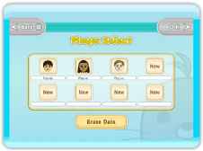
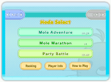
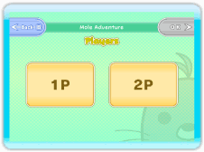
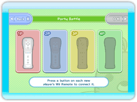

Starting a Game
Press on the title screen to move on to the Player Select screen. If this is your first time playing, you'll see a quick demonstration of how to play first.

Player Select Screen
This is where you select your player's data before moving on to the Mode Select screen. If you want to create new player data, select a "New" slot and choose the Mii™ you'd like to use.

Mode Select Screen
Select the mode you want to play.
Mole Adventure (1-2 players)
Bash away at the variety of moles that appear in each stage. Two players can work as a team.
Mole Marathon (1 player)
A single-player mode where you aim for a high score while missing as few moles as possible. You'll advance through levels the more moles you bash, making things more difficult.
Party Battle (1-4 players)
A battle mode for up to four players. Bash the required number of moles before anyone else, or hit the colored moles and try to build a winning hand.
Ranking
View the score rankings for both your Wii console and players from around the country.
Player Info
View your game stats and the titles you've earned.
How to Play
Display the how-to-play demo shown when you play the game for the first time.
Game Settings Screen
Once you select a mode, you'll move on to this screen, where you'll get to adjust the game settings. The options to choose from depend on which mode you're playing.


1. Number of Players
Choose how many people are joining in the game. Connect the required number of Wii Remotes and press the "OK" button. If you have less than four players for Party Battle, you'll get to choose how many CPU-controlled players will join you.
2. Choose a Mii
Select the Mii you want your game saved to. You cannot save your progress with a Guest Mii.
3. Select the Stage/Rules
Select the stage and ruleset you want. The exact options available depend on the game mode; see the individual mode's instructions for details.
4. Confirm Your Choices
Your choices will be displayed onscreen. Press the "Start" button to begin the game. To make a correction, press the "Back" button to return to the previous screen.